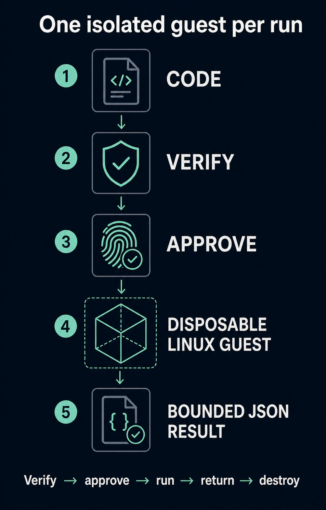

A disposable guest for untrusted code.
Capsule creates a fresh, locked-down Linux virtual machine on your Mac whenever an agent needs to run JavaScript or TypeScript. Deno runs the code inside that guest, returns a bounded result, and the entire guest is destroyed afterward.
The idea is simple
AI agents can write useful code, but that code can also be wrong, compromised, or deliberately hostile. Capsule is designed to run it somewhere disposable instead of giving it direct access to your Mac.
Before a run, Capsule fixes the exact code, input, limits, and runtime into a plan you can review. Your approval is valid for one attempt. The code then runs inside a new Linux/arm64 guest with no normal access to your files, network, processes, environment, or package ecosystem.
Capsule at a glance
The core idea is a short chain: submit bounded code, verify the plan, require approval, run it in a disposable guest, return a bounded result, and prove cleanup.

main.mjs file, human approval is required for the
intended product path, and product admission remains blocked.
What happens during a run
No single agent-facing component gets to propose code, approve it, and execute it by itself.
1. An agent submits code and bounded JSON input
▼
2. Capsule freezes the exact code, input, limits, and runtime
▼
3. You review that exact plan and approve one attempt
▼
4. The Supervisor starts a fresh Linux guest
▼
5. Deno runs the code without normal host access
▼
6. Capsule returns a bounded JSON result
▼
7. The guest is destroyed and its absence is verified- Exact plan
- You approve what will actually run
- Code, input, limits, and runtime identities are fixed before approval. They cannot be quietly replaced when execution starts.
- Fresh approval
- One human decision allows at most one attempt
- A native macOS approval app shows information retained by the Supervisor—not text supplied by the agent—and requires fresh user presence.
- Disposable guest
- A new Linux guest is created for every attempt
- Guests are never reused. The workload does not receive live host paths or normal access to macOS files, network services, processes, or environment variables.
- Verified cleanup
- A result alone does not count as success
- Capsule also checks lifecycle and teardown evidence. A guest saying “done,” closing a stream, or exiting with zero is not enough by itself.
JavaScript, TypeScript, and Deno
The broad goal and the first alpha are intentionally not identical.
- Product direction
- Modern JavaScript and TypeScript workloads
- Capsule is being built around a small, governed Deno runtime rather than a general Deno command-line environment.
- First alpha
- One dependency-free
main.mjsfile - The first release starts with modern JavaScript, bounded inline JSON, no imports, and no packages. TypeScript follows after its source-preparation boundary is proven safe.
- Deliberately absent
- No package loader or ambient host APIs
- Network access, subprocesses, host environment variables, native add-ons, FFI, live host paths, and arbitrary file artifacts are outside the first alpha.
Where the project stands
Many difficult pieces now work in controlled tests. The remaining job is to connect them without weakening the boundary.
- PASSED — scoped foundations
- The main building blocks have strong local evidence
- We can reproducibly build the governed Deno/V8 runtime for Linux/arm64; construct the guest root, kernel, launcher, and libkrun pieces; retain exact plans and source bytes; and exercise approval, lifecycle, cleanup, storage, backup, and recovery mechanics.
- IN_PROGRESS — TRENDING_GOOD
- Connect the tested pieces into one real run
- Current work is closing the final runnable profile, protected installation state, authenticated local communication, native approval, real guest lifecycle adapter, and trustworthy result-and-teardown record.
- BLOCKED — product admission
- Do not use Capsule as a security boundary yet
- The complete product path has not run a hostile workload. It must first pass a fixed benign guest checkpoint, then the signed installed path and the retained hostile, crash, timeout, replay, transport, and cleanup tests.
What makes this more than a Deno sandbox
Deno’s runtime permissions help, but the real boundary is the disposable virtual machine plus the macOS components that control approval and lifecycle.
- Separated authority
- Planning, approval, and execution have different owners
- Registered plans only
- Execution accepts a Supervisor-issued plan ID, never replacement plan bytes
- One-use approval
- Human approval is bound to one exact plan and at most one execution attempt
- No live host paths
- Approved bytes are copied into immutable, content-addressed inputs
- External isolation
- Every approved attempt gets a fresh disposable guest; guests are never reused
- Small runtime
- Unneeded loaders and host operations are physically left out
- Independent completion
- Guest output, EOF, or exit zero cannot prove success without teardown evidence
Where to read next
The repository documents current implementation status, intended architecture, unresolved work, evidence, and security reporting.